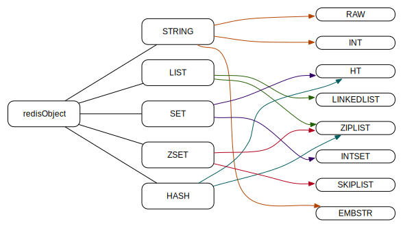

总起来看，redis 的数据存储结构大致是这样的：
它使用全局变量 server 来存储服务器信息：
1 struct redisServer server;
其中 redisServer 包含了数据存储结构、事件、集群、持久化等诸多信息，和数据存储结构相关的定义如下：
1 2 3 4 5 struct redisServer { redisDb *db; int dbnum; };
由此可见 redis 服务是由 redis 数据库(redisDb)构成的。redisServer 中存储了 redisDb 数组，其初始化大小可配置：
默认值为 16 :
1 #define REDIS_DEFAULT_DBNUM 16
server 在初始化的时候会对每一个数据库做初始化操作，因此配置时用不着的数据库尽量关闭：
1 2 3 4 5 6 7 8 9 10 11 12 13 ... server.dbnum = REDIS_DEFAULT_DBNUM; ... server.db = zmalloc(sizeof (redisDb)*server.dbnum); ... for (j = 0 ; j < server.dbnum; j++) { server.db[j].dict = dictCreate(&dbDictType,NULL ); server.db[j].expires = dictCreate(&keyptrDictType,NULL ); server.db[j].blocking_keys = dictCreate(&keylistDictType,NULL ); }
redisDb 的结构并不复杂：
1 2 3 4 5 6 typedef struct redisDb { dict *dict; int id; long long avg_ttl; } redisDb;
其中 dict *dict 用来存储键值对数据。也就是说 SET foo bar 命令实际会将 foo 存入 dict 结构的 key 中。Redis 用来存储值的对象是 redisObject ，它是对 redis 不同数据类型的抽象：
1 2 3 4 5 6 typedef struct redisObject { unsigned type:4 ; unsigned encoding:4 ; void *ptr; } robj;
其中 type 代表一个 redis 数据类型(抽象给用户使用的)，encoding 代表 redis 内部对该类型的实际编码方式(底层的数据结构实现)， *ptr 是指向实际值的指针。
redisObject 的类型为：
1 2 3 4 5 #define REDIS_STRING 0 #define REDIS_LIST 1 #define REDIS_SET 2 #define REDIS_ZSET 3 #define REDIS_HASH 4
编码方式有：
1 2 3 4 5 6 7 8 9 #define REDIS_ENCODING_RAW 0 #define REDIS_ENCODING_INT 1 #define REDIS_ENCODING_HT 2 #define REDIS_ENCODING_ZIPMAP 3 #define REDIS_ENCODING_LINKEDLIST 4 #define REDIS_ENCODING_ZIPLIST 5 #define REDIS_ENCODING_INTSET 6 #define REDIS_ENCODING_SKIPLIST 7 #define REDIS_ENCODING_EMBSTR 8
通常一个 redis 的对象类型都会对应两个以上的编码方式，它们的详细对应关系为：

命令示例：
1 2 3 4 5 6 7 8 9 10 11 12 13 14 15 16 17 18 19 $ SET foo abc $ OBJECT ENCODING foo "embstr" $ SET bar abcdefghijklmnopqrstuvwxyzabcdefghijklmnopqrstuvwxyz $ OBJECT ENCODING bar "raw" $ SET foobar 123 $ OBJECT ENCODING foobar "int" $ SET foobar 12345678901234567890 $ OBJECT ENCODING foobar "embstr" $ SET foobar 1.0 $ OBJECT ENCODING foobar "embstr"
(使用的源码基于 redis 3.0.5)